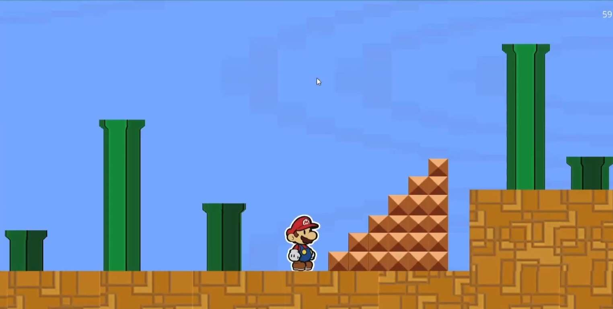
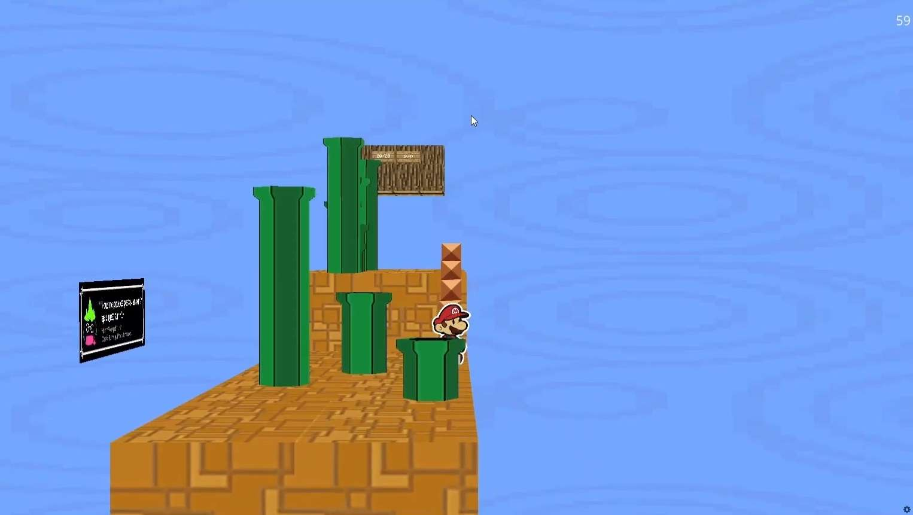

De nouveau dans le cadre d'un projet libre pour le cours de NSI, j'ai eu
l'occasion d'utiliser de nouveau ursina engine (déjà utilisé sur le projet de jeu de course). Cette
fois-ci, la consigne étant d'utiliser la programmation orientée objet de python. J'ai donc décidé de
faire un jeu de plateforme basé sur le principe de Super Paper Mario.

La vue 2D dans le jeu
La principale spécificité de Super Paper Mario que j'ai décidé d'exploiter
pour mon projet est l'alternance entre la 2D et la 3D. En effet, dans ce jeu, le joueur peut changer
de plan pour résoudre diverses énigmes. Pour cela, j'ai utilisé un système de caméra qui suit le
joueur.
Pour gérer les collisions, j'ai utilisé des raycasts, qui sont des rayons qui partent du joueur et
qui vérifient s'il y a une collision avec un objet. Si c'est le cas, le joueur ne peut pas se
déplacer dans cette direction. Il existe également des raycast qui vérifient si le joueur est au sol
ou non, pour donner l'impression qu'il tombe. Il y a donc différents raycasts pour chaque plan, 2D
ou 3D. En 2D, le raycast est un rayon qui va vérifier la totalité des éléments devant le joueur
(en réalité, le mode 2D n'est qu'un rendu du mode 3D, mais avec la caméra en mode de
projection orthogonale). En 3D, le raycast est un rayon qui va vérifier la collision avec les objets
du plan 3D. Le niveau utilise les textures de Super Paper Mario, et les modèles 3D ont été faits sur
blender.

La vue 3D dans le jeu, qui permet de contourner des objets impossibles à passer en 2D et inversement
Voici quelques exemples de ce que j'ai pu réaliser dans ce projet :
Le joueur est composé de 2 plans dos à dos pour donner l'impression qu'il est est
composé de papier. Pour les animations, j'ai utilisé un système de sprites, qui sont des images qui
sont affichées à une certaine fréquence pour donner l'impression d'une animation, notamment pour
l'animation de marche.
Pour faire des particules de fumée quand le personnage se déplace, j'ai utilisé créé des objets qui
sont des carrés gris qui se réduisent au fur et a mesure du temps. Ils sont ensuite détruits après
un certain temps.
Réfléchir à la mécanique de ce jeu était une idée que j'avais depuis
quelques
temps, et j'ai donc décidé de la réaliser pour ce projet. La conversion de la 3D en 2D m'a
demandé un peu de réflexion, mais j'ai finalement réussi à trouver une solution qui me satisfaisait.
Le jeu est assez bien réalisé par rapport à mes attentes, malgé quelques bugs que je n'ai pas eu le
temps de résoudre, du au manque de temps pour rendre ce projet, celui-ci était un peu trop poussé
pour ce qui était demandé, mais fut néanmoins un bon exercice pour moi.
Le code est disponible sur mon github.
Une video du projet est disponible sur youtube.